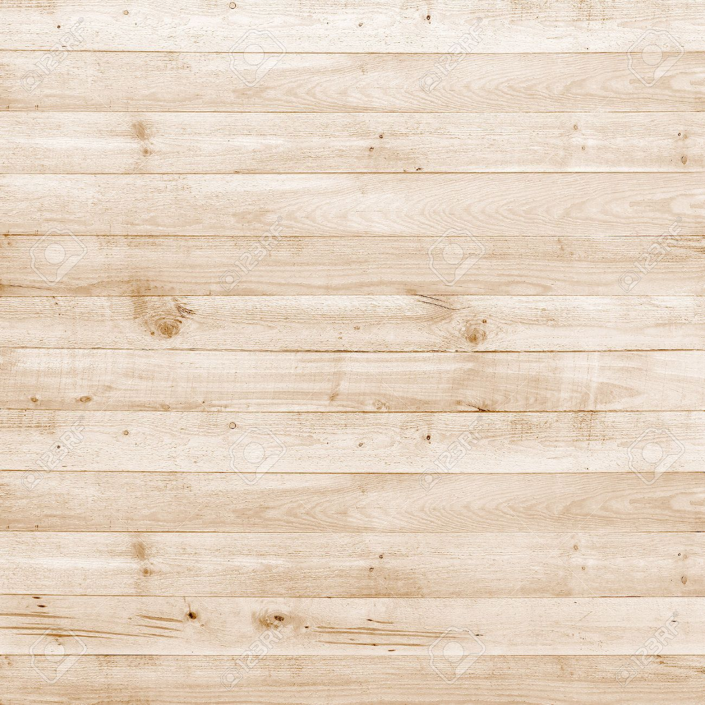
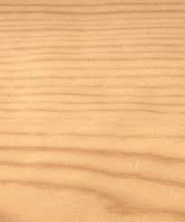
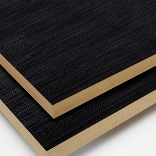
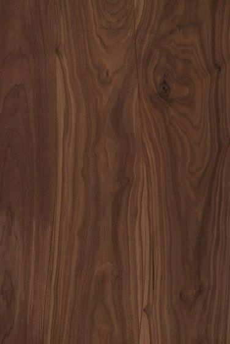

La madera de pino es elástica y al mismo tiempo resistente al daño mecánico. Proporciona un buen aislamiento térmico y acústico, se seca rápidamente y se cubre fácilmente con pintura debido a su susceptibilidad a la saturación.

Por su alta calidad y excelente pulido, permiten una amplia gama de acabados, brindando a todos los elementos arquitectónicos un terminado de madera natural.

Los paneles de MDF son extremadamente resistentes, con una superficie menos porosa, lo que permite mejores acabados para las pinturas, creando mayores posibilidades en el diseño de los entornos.

Buen acabado con barnices y pinturas. Madera muy fácil de barnizar y pintar, ya que, soporta cualquier tipo de acabado y barnizado disponible. Excelente elección
